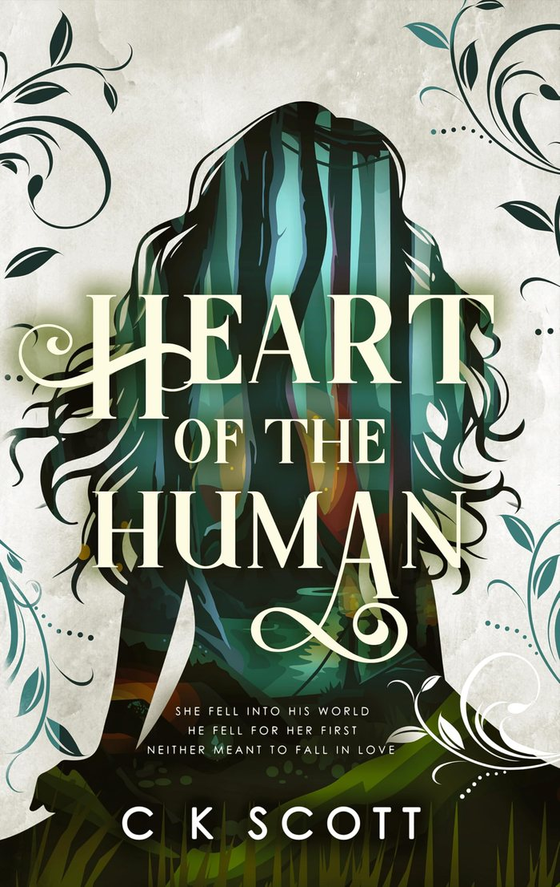

Heart of the Human, by C K Scott
All Josephine wanted was an ordinary life.

Heart of the Human
The Eternal Souls, book one
All Josephine wanted was an ordinary life. A widowed mother fighting to keep her children safe, she never expected to be torn from Earth and hurled into another world, one ruled by magic and mythical creatures.
Kohlvar has always been an outcast, part man, part myth, feared as a monster yet determined to protect others like him. The last thing he needs is another person to care for with an impossible mission.
Together, they are drawn into a labyrinth of power and betrayal, where every choice could tip kingdoms into chaos. To find a way home, Josephine must trust a man who is anything but human.
Torn from Earth
Josephine lands in a world of magic and mythical creatures, where every choice could tip kingdoms into chaos. To get home, she has to trust Kohlvar, the outcast everyone fears as a monster.
She fell into his world
He fell for her first
Neither meant to fall in love
Find her in 2027
C K calls 2027 her biggest year yet. She has four book events lined up, and she plans to have the prequel novella, Fire of the Forgotten, ready for all of them.
- Readers Unleashed
- A Romantic Rendezvous
- Once Upon a Fairytale
- Secrets in the Pages
Closer to home, paperbacks are on the shelf at Mr B’s Emporium and Elevenses in Cessnock.
C K Scott
C K Scott is an Australian indie author. Heart of the Human is her debut romantasy novel.
She’s a self-declared night owl and writes mostly between 8pm and midnight. Away from the page she grows vegetables, crochets, listens to audiobooks, and cooks “like a medieval witch throwing ingredients willy nilly into a pot”.